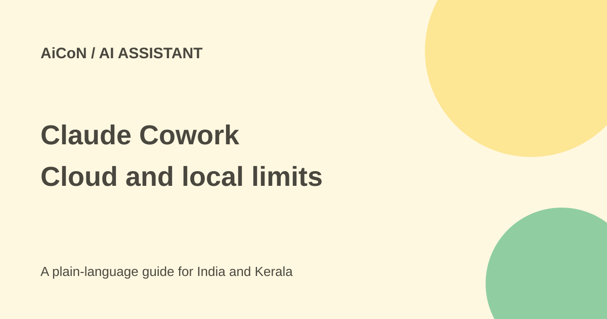

Claude Cowork: web, mobile and cloud task limits
Claude Cowork is Anthropic's task-doing mode on paid plans. New Pro and Max tasks run in the cloud from 6 October 2026. Work can continue with your laptop closed, but access to local files still needs the desktop app.

What can it do?
You describe a task such as preparing a document or organising information. Anthropic says sessions and files are saved with your account and can follow you between web, desktop and mobile.
On some Pro and Max accounts, Cowork and chat are becoming one Claude experience. If you no longer see separate Chat and Cowork choices, that can be the new interface, not a missing subscription feature.
Who gets access?
The help page lists web and mobile beta access for Pro, Max and Team. Enterprise needs an administrator to enable it. This is not part of the free-plan claim. Features differ across devices and plans.
For an Indian student or small business, the useful distinction is between work on files already in the cloud session and work reaching a computer. A cloud task may keep running, yet still lose access to a folder when its desktop app closes.
How to try a safe task
- Read Anthropic's current help page and check your plan.
- Open claude.ai or update the Claude mobile or desktop app.
- Choose Cowork if the option is present. In the unified experience, describe the task directly.
- If you do not want the task to use or add to memory, turn off Memory in the + menu before starting.
- Start with a small, non-sensitive test file. State the outcome and which files may be used.
- Review requested connectors and folder access before granting them. Connect only what this task needs.
- Keep the desktop app open if the task needs local files, local connectors, browser use or computer use.
- Review the result before sending it, paying, deleting files or using it as a factual answer.
What changed on 6 October?
New Pro and Max Cowork tasks move to the cloud. Tasks already started locally stay on that computer. Scheduled tasks move to the cloud too, but a task using local files still needs the desktop app open.
The help page says cloud sessions follow the Help improve our AI models setting. Read the current privacy settings before uploading confidential information. Cloud work is not the same as keeping all work on your computer.
Cost and limits
Cowork requires a paid plan. This review did not confirm an Indian checkout amount or a fixed task quota, so no rupee subscription price is promised. Check the plan, tax, billing period and usage limits inside your account before paying.
Web and mobile remain beta. Not every desktop capability works there. Local access needs the desktop app and the appropriate connected folder; merely opening the same session on a phone does not grant access to all computer files.
What changed since the original post?
We added the unified-interface rollout, local-task exception and desktop-dependent access. The cloud claim is supported by the current help page, but we did not run a task or test India account access.
Frequently asked questions
Can I close my laptop?
Cloud work can continue, but it cannot reach local files without the required desktop app online.
Why is there no Cowork button?
Some Pro and Max accounts have the unified Claude interface. Check the rollout note in the help page.
Is it free?
No. The checked help page requires paid plans.
Sources: Anthropic web, desktop and mobile guide. Checked 7 October 2026.